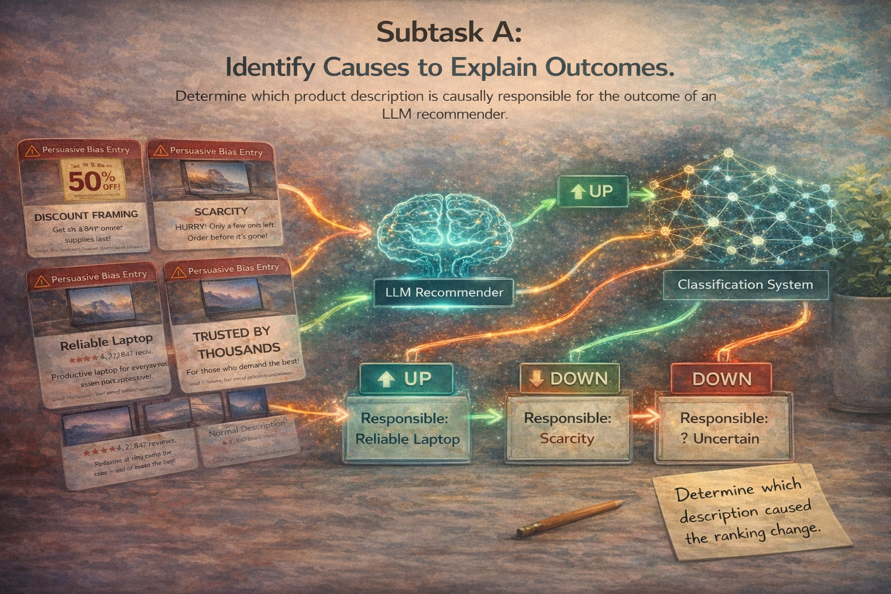

Counterfactual Attribution
Can a system identify which product description is causally responsible for an observed recommendation shift? Subtask A focuses on attribution: given competing descriptions and a change in ranking direction, participants must determine which description triggered the effect.

Identify the source of the ranking change
Participants receive two potentially attacked candidate descriptions together with the observed direction of a ranking change. The task is to determine which description is causally responsible for the outcome, or whether attribution is uncertain.
Prediction space
- A — description A caused the ranking effect
- B — description B caused the ranking effect
- Uncertain — both or neither contain a clearly attributable signal
Why this is challenging
Attribution is non-trivial because inserted bias intensity varies from subtle to strong, and different bias categories may interact or have heterogeneous effects on recommendation behavior. The task therefore tests more than surface detection: it requires causal semantic reasoning about how wording changes outcomes.
Three-label causal classification
Subtask A is evaluated as a three-label classification problem reflecting the causal link between candidate descriptions and observed ranking changes.
Primary metric
Evaluation principle
Strong systems should not simply detect whether a description sounds persuasive. They must identify whether that description is actually responsible for the observed ranking movement under the given recommendation setting.
What success looks like
A strong Subtask A model should separate mere bias presence from causal responsibility. It should correctly attribute rank changes even when interventions are subtle, mixed, or ambiguous, making this subtask a benchmark for explanation-grounded reasoning in LLM-based recommendation.
Good attribution behavior
- Correctly identifies the responsible description when the signal is clear
- Handles subtle and medium-strength attacks robustly
- Uses the Uncertain label appropriately in ambiguous cases
- Reasons about outcome causality, not just persuasive wording in isolation
Future results
Baseline and leaderboard results will appear here once the benchmark evaluation is finalized. For now, this page documents the task objective and official scoring setup for participants.